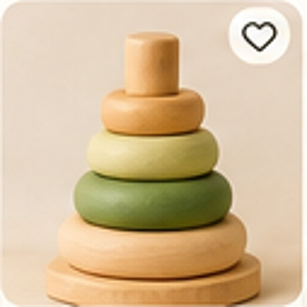
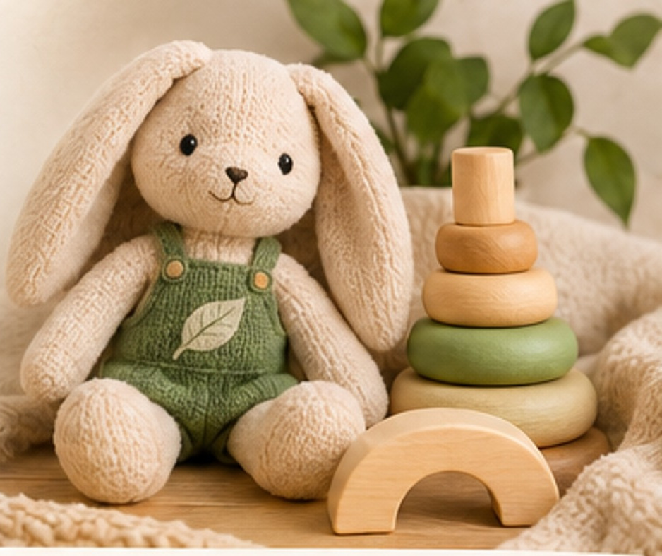
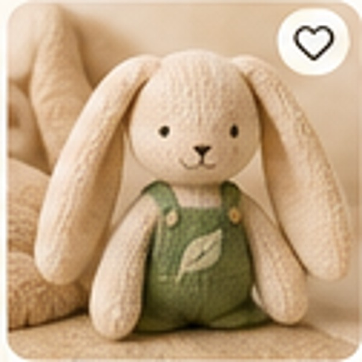
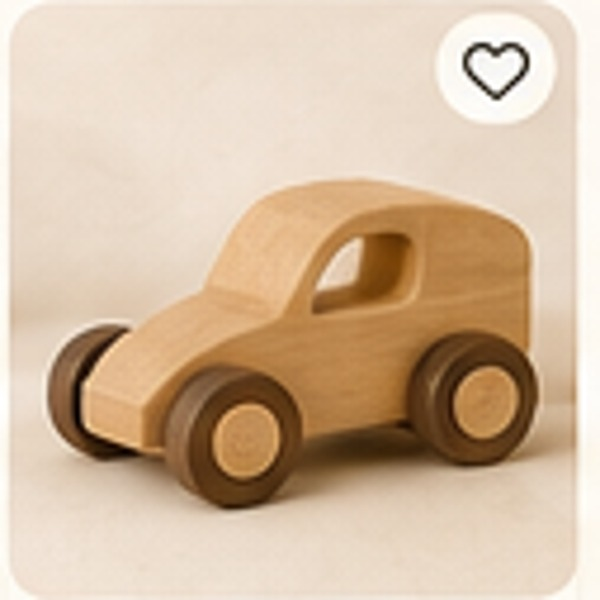
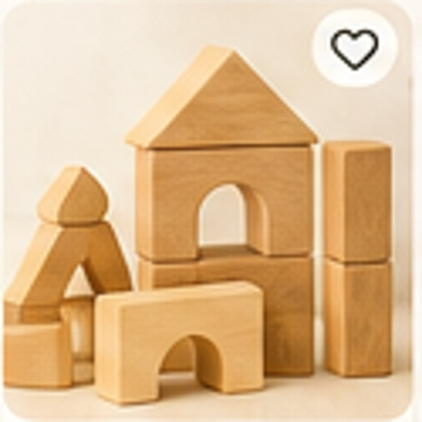
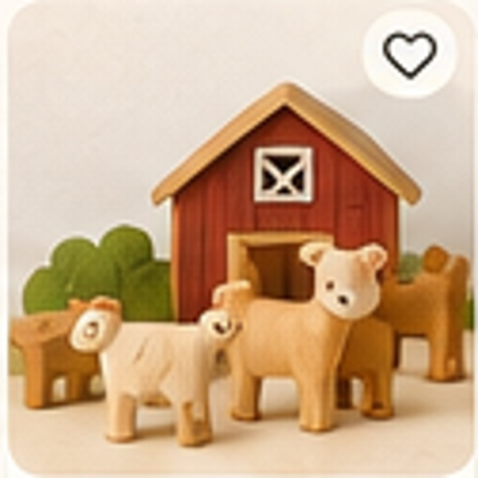

Дерев’яні іграшки · 1–3 роки
Дерев’яна пірамідка «Лісові кольори»
Пірамідка для знайомства з формами, розмірами та кольорами.
450 грн
Теплі матеріали, продуманий дизайн і безмежний простір для дитячої уяви.

П’ять моделей зі стартової колекції BULKA.

Пірамідка для знайомства з формами, розмірами та кольорами.

М’який текстильний друг для затишних ігор.

Іграшкова машинка для сюжетних ігор.

Набір дерев’яних деталей для творчого будівництва.

Ігровий набір для створення власних історій.